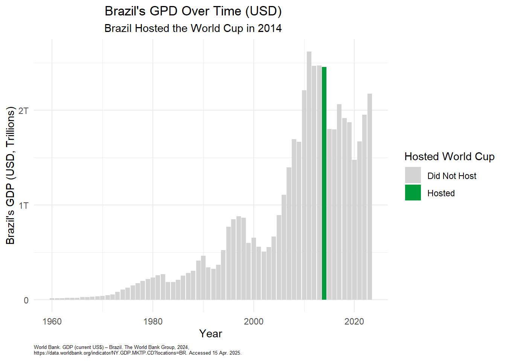
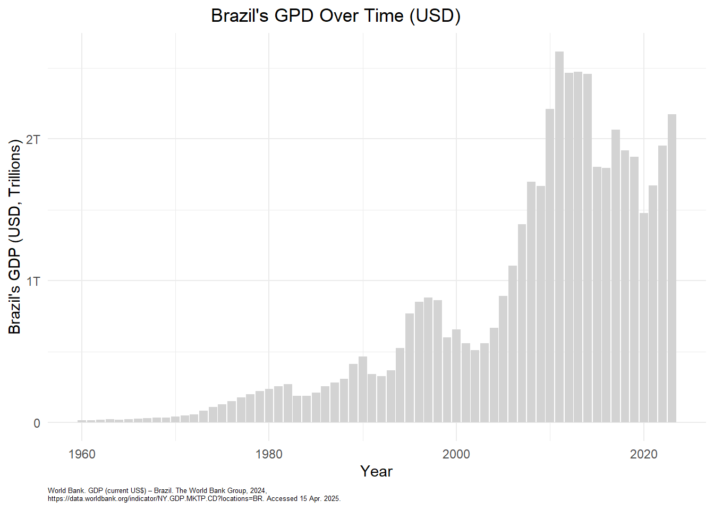

# A tibble: 900 × 15
year country city stage home_team away_team home_score away_score outcome
<dbl> <chr> <chr> <chr> <chr> <chr> <dbl> <dbl> <chr>
1 1930 Uruguay Montev… Grou… France Mexico 4 1 H
2 1930 Uruguay Montev… Grou… Belgium United S… 0 3 A
3 1930 Uruguay Montev… Grou… Brazil Yugoslav… 1 2 A
4 1930 Uruguay Montev… Grou… Peru Romania 1 3 A
5 1930 Uruguay Montev… Grou… Argentina France 1 0 H
6 1930 Uruguay Montev… Grou… Chile Mexico 3 0 H
7 1930 Uruguay Montev… Grou… Bolivia Yugoslav… 0 4 A
8 1930 Uruguay Montev… Grou… Paraguay United S… 0 3 A
9 1930 Uruguay Montev… Grou… Uruguay Peru 1 0 H
10 1930 Uruguay Montev… Grou… Argentina Mexico 6 3 H
# ℹ 890 more rows
# ℹ 6 more variables: win_conditions <chr>, winning_team <chr>,
# losing_team <chr>, date <date>, month <chr>, dayofweek <chr>6 Nolan R
# A tibble: 268 × 3
`Data Source` `World Development Indicators` ...3
<chr> <chr> <chr>
1 Last Updated Date 2025-03-24 <NA>
2 Country Name Country Code "Indicator Name,I…
3 Aruba ABW "GDP (current US$…
4 Africa Eastern and Southern AFE "GDP (current US$…
5 Afghanistan AFG "GDP (current US$…
6 Africa Western and Central AFW "GDP (current US$…
7 Angola AGO "GDP (current US$…
8 Albania ALB "GDP (current US$…
9 Andorra AND "GDP (current US$…
10 Arab World ARB "GDP (current US$…
# ℹ 258 more rows# A tibble: 265 × 6
`Country Code` Region IncomeGroup SpecialNotes TableName ...6
<chr> <chr> <chr> <chr> <chr> <lgl>
1 ABW Latin America & Cari… High income <NA> Aruba NA
2 AFE <NA> <NA> "26 countri… Africa E… NA
3 AFG South Asia Low income "The report… Afghanis… NA
4 AFW <NA> <NA> "22 countri… Africa W… NA
5 AGO Sub-Saharan Africa Lower midd… "The World … Angola NA
6 ALB Europe & Central Asia Upper midd… <NA> Albania NA
7 AND Europe & Central Asia High income <NA> Andorra NA
8 ARB <NA> <NA> "Arab World… Arab Wor… NA
9 ARE Middle East & North … High income <NA> United A… NA
10 ARG Latin America & Cari… Upper midd… "The World … Argentina NA
# ℹ 255 more rows# A tibble: 1 × 5
INDICATOR_CODE INDICATOR_NAME SOURCE_NOTE SOURCE_ORGANIZATION ...5
<chr> <chr> <chr> <chr> <lgl>
1 NY.GDP.MKTP.CD GDP (current US$) GDP at purchaser's… World Bank nationa… NA # A tibble: 6 × 2
year gdp_usd
<int> <dbl>
1 1960 17030465539.
2 1961 17275940449.
3 1962 19231747852.
4 1963 23287712878.
5 1964 20963733695.
6 1965 22465522884.

6.1 Key Takeaways
Brazil’s GDP was on a rapid upward trend from 2002 to 2014 (the year of the World Cup). The GDP reflects the overall economic activity and generation of wealth of a country. This can be a deceiving metric for wealth the wealth of a country because the GDP can raise due to government spending. The government of Brazil’s total spending surged to an all time high in the years previous to the World Cup. Additionally, Brazil hosted the Olympics in 2016 which had a similar economic impact.
After the World Cup, the GDP’s upward trend was halted and began to decrease. This can partially be attributed to a decrease of government spending following the World Cup. However, there were other economic factors that contributed to the change in GDP following 2014.
6.2 Questions
What specifically caused the GDP of Brazil to increase before the World Cup?
What caused the GDP of Brazil to decrease after hosting the World Cup?
Can this be attributed to the World Cup or were other events more impactful?
Data Frame Summary
gdp_data
Dimensions: 266 x 69
Duplicates: 0
----------------------------------------------------------------------------------------------------------------------------------
No Variable Stats / Values Freqs (% of Valid) Graph Valid Missing
---- ---------------- ----------------------------------------- --------------------- ---------------------- ---------- ----------
1 Country Name 1. Afghanistan 1 ( 0.4%) 266 0
[character] 2. Africa Eastern and Southe 1 ( 0.4%) (100.0%) (0.0%)
3. Africa Western and Centra 1 ( 0.4%)
4. Albania 1 ( 0.4%)
5. Algeria 1 ( 0.4%)
6. American Samoa 1 ( 0.4%)
7. Andorra 1 ( 0.4%)
8. Angola 1 ( 0.4%)
9. Antigua and Barbuda 1 ( 0.4%)
10. Arab World 1 ( 0.4%)
[ 256 others ] 256 (96.2%) IIIIIIIIIIIIIIIIIII
2 Country Code 1. ABW 1 ( 0.4%) 266 0
[character] 2. AFE 1 ( 0.4%) (100.0%) (0.0%)
3. AFG 1 ( 0.4%)
4. AFW 1 ( 0.4%)
5. AGO 1 ( 0.4%)
6. ALB 1 ( 0.4%)
7. AND 1 ( 0.4%)
8. ARB 1 ( 0.4%)
9. ARE 1 ( 0.4%)
10. ARG 1 ( 0.4%)
[ 256 others ] 256 (96.2%) IIIIIIIIIIIIIIIIIII
3 Indicator Name 1. GDP (current US$) 266 (100.0%) IIIIIIIIIIIIIIIIIIII 266 0
[character] (100.0%) (0.0%)
4 Indicator Code 1. NY.GDP.MKTP.CD 266 (100.0%) IIIIIIIIIIIIIIIIIIII 266 0
[character] (100.0%) (0.0%)
5 1960 Mean (sd) : 67861705803 (201925392043) 149 distinct values : 151 115
[numeric] min < med < max: : (56.8%) (43.2%)
12012025 < 3359404118 < 1.371947e+12 :
IQR (CV) : 32742785958 (3) :
:
6 1961 Mean (sd) : 69822508885 (211601644934) 152 distinct values : 154 112
[numeric] min < med < max: : (57.9%) (42.1%)
11592024 < 3330232971 < 1.445951e+12 :
IQR (CV) : 32329037421 (3) :
:
7 1962 Mean (sd) : 73274922915 (225726874115) 155 distinct values : 157 109
[numeric] min < med < max: : (59.0%) (41.0%)
12541635 < 3308912797 < 1.550598e+12 :
IQR (CV) : 31267524890 (3.1) :
:
8 1963 Mean (sd) : 79082184158 (2.42731e+11) 156 distinct values : 157 109
[numeric] min < med < max: : (59.0%) (41.0%)
12833301 < 3988461539 < 1.66957e+12 :
IQR (CV) : 35986587466 (3.1) :
:
9 1964 Mean (sd) : 86803275192 (265797558183) 155 distinct values : 157 109
[numeric] min < med < max: : (59.0%) (41.0%)
13416633 < 4016794166 < 1.830168e+12 :
IQR (CV) : 3.2616e+10 (3.1) :
:
10 1965 Mean (sd) : 91334821357 (284477281504) 162 distinct values : 163 103
[numeric] min < med < max: : (61.3%) (38.7%)
13593932 < 3817226546 < 1.994298e+12 :
IQR (CV) : 34053446406 (3.1) :
:
11 1966 Mean (sd) : 97933284759 (308838622560) 162 distinct values : 164 102
[numeric] min < med < max: : (61.7%) (38.3%)
14469078 < 4153526984 < 2.161754e+12 :
IQR (CV) : 36556107892 (3.2) :
:
12 1967 Mean (sd) : 101497105454 (325787615834) 165 distinct values : 167 99
[numeric] min < med < max: : (62.8%) (37.2%)
15835106 < 3532700000 < 2.293944e+12 :
IQR (CV) : 35949773165 (3.2) :
:
13 1968 Mean (sd) : 108679410050 (3.51586e+11) 166 distinct values : 168 98
[numeric] min < med < max: : (63.2%) (36.8%)
14600000 < 4529030669 < 2.4789e+12 :
IQR (CV) : 37892208199 (3.2) :
:
14 1969 Mean (sd) : 1.20348e+11 (387603167130) 166 distinct values : 168 98
[numeric] min < med < max: : (63.2%) (36.8%)
15850000 < 5087250891 < 2.738144e+12 :
IQR (CV) : 42685877421 (3.2) :
:
15 1970 Mean (sd) : 116999543028 (401356857955) 188 distinct values : 190 76
[numeric] min < med < max: : (71.4%) (28.6%)
2585956 < 3250771648 < 3.003116e+12 :
IQR (CV) : 40882918928 (3.4) :
:
16 1971 Mean (sd) : 1.28309e+11 (443189403377) 189 distinct values : 191 75
[numeric] min < med < max: : (71.8%) (28.2%)
2716990 < 3865346535 < 3.318578e+12 :
IQR (CV) : 45502009999 (3.5) :
:
17 1972 Mean (sd) : 148079494424 (512824130802) 189 distinct values : 191 75
[numeric] min < med < max: : (71.8%) (28.2%)
2968458 < 4203069035 < 3.8331e+12 :
IQR (CV) : 52934232523 (3.5) :
:
18 1973 Mean (sd) : 1.82954e+11 (624164308423) 189 distinct values : 191 75
[numeric] min < med < max: : (71.8%) (28.2%)
3411915 < 5152080388 < 4.687591e+12 :
IQR (CV) : 65308170397 (3.4) :
:
19 1974 Mean (sd) : 214303165555 (710250387921) 189 distinct values : 191 75
[numeric] min < med < max: : (71.8%) (28.2%)
4122329 < 7684800000 < 5.41837e+12 :
IQR (CV) : 87458074060 (3.3) :
:
20 1975 Mean (sd) : 234158471465 (786250142772) 193 distinct values : 195 71
[numeric] min < med < max: : (73.3%) (26.7%)
4014748 < 7731674472 < 6.033156e+12 :
IQR (CV) : 93720070662 (3.4) :
:
21 1976 Mean (sd) : 253535894298 (852525921144) 193 distinct values : 195 71
[numeric] min < med < max: : (73.3%) (26.7%)
3919072 < 9091921030 < 6.558692e+12 :
IQR (CV) : 91756730728 (3.4) :
:
22 1977 Mean (sd) : 2.82062e+11 (9.564e+11) 196 distinct values : 198 68
[numeric] min < med < max: : (74.4%) (25.6%)
3669420 < 8691874149 < 7.414825e+12 :
IQR (CV) : 94058606037 (3.4) :
:
23 1978 Mean (sd) : 333109751424 (1.142365e+12) 195 distinct values : 197 69
[numeric] min < med < max: : (74.1%) (25.9%)
3798782 < 1.1165e+10 < 8.77834e+12 :
IQR (CV) : 110897226155 (3.4) :
:
24 1979 Mean (sd) : 385275564410 (1.31895e+12) 196 distinct values : 198 68
[numeric] min < med < max: : (74.4%) (25.6%)
4065659 < 11339840764 < 1.015381e+13 :
IQR (CV) : 130499631431 (3.4) :
:
25 1980 Mean (sd) : 417067888828 (1.443281e+12) 206 distinct values : 208 58
[numeric] min < med < max: : (78.2%) (21.8%)
4206128 < 10485524951 < 1.14497e+13 :
IQR (CV) : 135213628586 (3.5) :
:
26 1981 Mean (sd) : 432093498142 (1.471344e+12) 206 distinct values : 208 58
[numeric] min < med < max: : (78.2%) (21.8%)
4773018 < 10901094788 < 1.183995e+13 :
IQR (CV) : 1.66301e+11 (3.4) :
:
27 1982 Mean (sd) : 423877389410 (1.453217e+12) 207 distinct values : 209 57
[numeric] min < med < max: : (78.6%) (21.4%)
4118945 < 9178780077 < 1.171662e+13 :
IQR (CV) : 151972535188 (3.4) :
:
28 1983 Mean (sd) : 426873750046 (1.491601e+12) 207 distinct values : 209 57
[numeric] min < med < max: : (78.6%) (21.4%)
4152550 < 9220600000 < 1.196004e+13 :
IQR (CV) : 149986572027 (3.5) :
:
29 1984 Mean (sd) : 435879434926 (1.547014e+12) 209 distinct values : 211 55
[numeric] min < med < max: : (79.3%) (20.7%)
4481978 < 9.47e+09 < 1.242488e+13 :
IQR (CV) : 134750620140 (3.5) :
:
30 1985 Mean (sd) : 451137061085 (1.617547e+12) 211 distinct values : 213 53
[numeric] min < med < max: : (80.1%) (19.9%)
3862852 < 9717392687 < 1.30137e+13 :
IQR (CV) : 136637555642 (3.6) :
:
31 1986 Mean (sd) : 525540548367 (1.935156e+12) 211 distinct values : 213 53
[numeric] min < med < max: : (80.1%) (19.9%)
4574706 < 9158302100 < 1.534425e+13 :
IQR (CV) : 132151421650 (3.7) :
:
32 1987 Mean (sd) : 576857831055 (2.190692e+12) 218 distinct values : 220 46
[numeric] min < med < max: : (82.7%) (17.3%)
5020514 < 9109938252 < 1.746687e+13 :
IQR (CV) : 141641918875 (3.8) :
:
33 1988 Mean (sd) : 638447242181 (2.438612e+12) 221 distinct values : 223 43
[numeric] min < med < max: : (83.8%) (16.2%)
7011059 < 10255169806 < 1.951744e+13 :
IQR (CV) : 169906265843 (3.8) :
:
34 1989 Mean (sd) : 666432280353 (2.545177e+12) 221 distinct values : 223 43
[numeric] min < med < max: : (83.8%) (16.2%)
8454523 < 10037674038 < 2.038672e+13 :
IQR (CV) : 1.82697e+11 (3.8) :
:
35 1990 Mean (sd) : 709405680704 (2.774097e+12) 238 distinct values : 240 26
[numeric] min < med < max: : (90.2%) (9.8%)
9542901 < 12311553523 < 2.29874e+13 :
IQR (CV) : 167162259776 (3.9) :
:
36 1991 Mean (sd) : 726867380345 (2.9017e+12) 239 distinct values : 241 25
[numeric] min < med < max: : (90.6%) (9.4%)
10127314 < 11009993703 < 2.391165e+13 :
IQR (CV) : 177067731514 (4) :
:
37 1992 Mean (sd) : 7.71072e+11 (3.104317e+12) 240 distinct values : 242 24
[numeric] min < med < max: : (91.0%) (9.0%)
10535028 < 10687984164 < 2.553421e+13 :
IQR (CV) : 160803688676 (4) :
:
38 1993 Mean (sd) : 779681546862 (3.129528e+12) 241 distinct values : 243 23
[numeric] min < med < max: : (91.4%) (8.6%)
10414400 < 11259647875 < 2.595855e+13 :
IQR (CV) : 173196837127 (4) :
:
39 1994 Mean (sd) : 836764523865 (3.349798e+12) 242 distinct values : 244 22
[numeric] min < med < max: : (91.7%) (8.3%)
11772611 < 11103753967 < 2.79419e+13 :
IQR (CV) : 176408403355 (4) :
:
40 1995 Mean (sd) : 926384551317 (3.701793e+12) 245 distinct values : 247 19
[numeric] min < med < max: : (92.9%) (7.1%)
11922614 < 12894029888 < 3.114968e+13 :
IQR (CV) : 202268356409 (4) :
:
41 1996 Mean (sd) : 956072299621 (3.757704e+12) 246 distinct values : 247 19
[numeric] min < med < max: : (92.9%) (7.1%)
13338597 < 13690217334 < 3.18669e+13 :
IQR (CV) : 228923224279 (3.9) :
:
42 1997 Mean (sd) : 947708106044 (3.700978e+12) 247 distinct values : 249 17
[numeric] min < med < max: : (93.6%) (6.4%)
13734210 < 14337614318 < 3.176081e+13 :
IQR (CV) : 209274461642 (3.9) :
:
43 1998 Mean (sd) : 944101750602 (3.705973e+12) 248 distinct values : 250 16
[numeric] min < med < max: : (94.0%) (6.0%)
13795146 < 15115950600 < 3.170268e+13 :
IQR (CV) : 215271224314 (3.9) :
:
44 1999 Mean (sd) : 962040074627 (3.854485e+12) 248 distinct values : 250 16
[numeric] min < med < max: : (94.0%) (6.0%)
14800503 < 14955597072 < 3.274709e+13 :
IQR (CV) : 179994673419 (4) :
:
45 2000 Mean (sd) : 986258831229 (3.938232e+12) 250 distinct values : 252 14
[numeric] min < med < max: : (94.7%) (5.3%)
15073976 < 14387071816 < 3.385585e+13 :
IQR (CV) : 188146400935 (4) :
:
46 2001 Mean (sd) : 979182478643 (3.908266e+12) 252 distinct values : 253 13
[numeric] min < med < max: : (95.1%) (4.9%)
13964732 < 14183446026 < 3.364606e+13 :
IQR (CV) : 189009628617 (4) :
:
47 2002 Mean (sd) : 1.002169e+12 (4.04216e+12) 255 distinct values : 257 9
[numeric] min < med < max: : (96.6%) (3.4%)
16842673 < 14594900945 < 3.494017e+13 :
IQR (CV) : 192626360241 (4) :
:
48 2003 Mean (sd) : 1.130516e+12 (4.536659e+12) 255 distinct values : 257 9
[numeric] min < med < max: : (96.6%) (3.4%)
19456338 < 17812704586 < 3.918176e+13 :
IQR (CV) : 215057502911 (4) :
:
49 2004 Mean (sd) : 1.28366e+12 (5.084818e+12) 256 distinct values : 257 9
[numeric] min < med < max: : (96.6%) (3.4%)
22798275 < 20288513844 < 4.41511e+13 :
IQR (CV) : 252864222754 (4) :
:
50 2005 Mean (sd) : 1.404502e+12 (5.444977e+12) 255 distinct values : 257 9
[numeric] min < med < max: : (96.6%) (3.4%)
22909980 < 21497336499 < 4.781168e+13 :
IQR (CV) : 305112686772 (3.9) :
:
51 2006 Mean (sd) : 1.534695e+12 (5.831457e+12) 256 distinct values : 258 8
[numeric] min < med < max: : (97.0%) (3.0%)
24096876 < 23998476794 < 5.181536e+13 :
IQR (CV) : 341553645734 (3.8) :
:
52 2007 Mean (sd) : 1.756442e+12 (6.516334e+12) 256 distinct values : 258 8
[numeric] min < med < max: : (97.0%) (3.0%)
22766972 < 29090295101 < 5.838922e+13 :
IQR (CV) : 406803474685 (3.7) :
:
53 2008 Mean (sd) : 1.951583e+12 (7.083816e+12) 257 distinct values : 259 7
[numeric] min < med < max: : (97.4%) (2.6%)
31874435 < 34078240293 < 6.415228e+13 :
IQR (CV) : 485386653788 (3.6) :
:
54 2009 Mean (sd) : 1.841466e+12 (6.667607e+12) 259 distinct values : 261 5
[numeric] min < med < max: : (98.1%) (1.9%)
28076984 < 33886813250 < 6.08145e+13 :
IQR (CV) : 4.23055e+11 (3.6) :
:
55 2010 Mean (sd) : 2.042827e+12 (7.218093e+12) 259 distinct values : 261 5
[numeric] min < med < max: : (98.1%) (1.9%)
32105409 < 38443907042 < 6.660971e+13 :
IQR (CV) : 4.74703e+11 (3.5) :
:
56 2011 Mean (sd) : 2.285959e+12 (7.979548e+12) 260 distinct values : 262 4
[numeric] min < med < max: : (98.5%) (1.5%)
39196958 < 42974557781 < 7.408084e+13 :
IQR (CV) : 522478227817 (3.5) :
:
57 2012 Mean (sd) : 2.362423e+12 (8.155915e+12) 258 distinct values : 260 6
[numeric] min < med < max: : (97.7%) (2.3%)
39345580 < 43663760465 < 7.570585e+13 :
IQR (CV) : 538335531656 (3.5) :
:
58 2013 Mean (sd) : 2.448169e+12 (8.395023e+12) 258 distinct values : 260 6
[numeric] min < med < max: : (97.7%) (2.3%)
38615891 < 48276251636 < 7.787345e+13 :
IQR (CV) : 523994368981 (3.4) :
:
59 2014 Mean (sd) : 2.512526e+12 (8.609254e+12) 259 distinct values : 261 5
[numeric] min < med < max: : (98.1%) (1.9%)
38760983 < 50271812921 < 8.002034e+13 :
IQR (CV) : 533021561719 (3.4) :
:
60 2015 Mean (sd) : 2.382043e+12 (8.174322e+12) 257 distinct values : 259 7
[numeric] min < med < max: : (97.4%) (2.6%)
36811936 < 48717501321 < 7.547247e+13 :
IQR (CV) : 488596270802 (3.4) :
:
61 2016 Mean (sd) : 2.424134e+12 (8.328694e+12) 256 distinct values : 258 8
[numeric] min < med < max: : (97.0%) (3.0%)
41629064 < 48065653179 < 7.670255e+13 :
IQR (CV) : 495610762164 (3.4) :
:
62 2017 Mean (sd) : 2.597268e+12 (8.865044e+12) 256 distinct values : 258 8
[numeric] min < med < max: : (97.0%) (3.0%)
45276595 < 52770012341 < 8.171204e+13 :
IQR (CV) : 524958379243 (3.4) :
:
63 2018 Mean (sd) : 2.765285e+12 (9.440413e+12) 256 distinct values : 258 8
[numeric] min < med < max: : (97.0%) (3.0%)
48015260 < 56097187116 < 8.688484e+13 :
IQR (CV) : 539215262131 (3.4) :
:
64 2019 Mean (sd) : 2.807353e+12 (9.580867e+12) 256 distinct values : 258 8
[numeric] min < med < max: : (97.0%) (3.0%)
54123199 < 57752480462 < 8.814985e+13 :
IQR (CV) : 532052449155 (3.4) :
:
65 2020 Mean (sd) : 2.736278e+12 (9.36834e+12) 255 distinct values : 257 9
[numeric] min < med < max: : (96.6%) (3.4%)
51746594 < 53668636568 < 8.576301e+13 :
IQR (CV) : 535630876651 (3.4) :
:
66 2021 Mean (sd) : 3.141029e+12 (1.069643e+13) 255 distinct values : 257 9
[numeric] min < med < max: : (96.6%) (3.4%)
60196406 < 61529280461 < 9.78483e+13 :
IQR (CV) : 627115555180 (3.4) :
:
67 2022 Mean (sd) : 3.307885e+12 (1.114471e+13) 252 distinct values : 254 12
[numeric] min < med < max: : (95.5%) (4.5%)
59065982 < 69704154660 < 1.017709e+14 :
IQR (CV) : 667439507808 (3.4) :
:
68 2023 Mean (sd) : 3.61864e+12 (1.190401e+13) 240 distinct values : 242 24
[numeric] min < med < max: : (91.0%) (9.0%)
62280312 < 83837520322 < 1.061717e+14 :
IQR (CV) : 1.006491e+12 (3.3) :
:
69 ...69 All NA's 0 266
[logical] (0.0%) (100.0%)
----------------------------------------------------------------------------------------------------------------------------------Data Frame Summary
gdp_data
Dimensions: 266 x 69Duplicates: 0
| No | Variable | Stats / Values | Freqs (% of Valid) | Graph | Valid | Missing | |||||||||||||||||||||||||||||||||||||||||||||||||||||||
|---|---|---|---|---|---|---|---|---|---|---|---|---|---|---|---|---|---|---|---|---|---|---|---|---|---|---|---|---|---|---|---|---|---|---|---|---|---|---|---|---|---|---|---|---|---|---|---|---|---|---|---|---|---|---|---|---|---|---|---|---|---|
| 1 | Country Name [character] |
|
|
 |
266 (100.0%) | 0 (0.0%) | |||||||||||||||||||||||||||||||||||||||||||||||||||||||
| 2 | Country Code [character] |
|
|
|
266 (100.0%) | 0 (0.0%) | |||||||||||||||||||||||||||||||||||||||||||||||||||||||
| 3 | Indicator Name [character] | 1. GDP (current US$) |
|
 |
266 (100.0%) | 0 (0.0%) | |||||||||||||||||||||||||||||||||||||||||||||||||||||||
| 4 | Indicator Code [character] | 1. NY.GDP.MKTP.CD |
|
|
266 (100.0%) | 0 (0.0%) | |||||||||||||||||||||||||||||||||||||||||||||||||||||||
| 5 | 1960 [numeric] |
|
149 distinct values |  |
151 (56.8%) | 115 (43.2%) | |||||||||||||||||||||||||||||||||||||||||||||||||||||||
| 6 | 1961 [numeric] |
|
152 distinct values |  |
154 (57.9%) | 112 (42.1%) | |||||||||||||||||||||||||||||||||||||||||||||||||||||||
| 7 | 1962 [numeric] |
|
155 distinct values |  |
157 (59.0%) | 109 (41.0%) | |||||||||||||||||||||||||||||||||||||||||||||||||||||||
| 8 | 1963 [numeric] |
|
156 distinct values |  |
157 (59.0%) | 109 (41.0%) | |||||||||||||||||||||||||||||||||||||||||||||||||||||||
| 9 | 1964 [numeric] |
|
155 distinct values |  |
157 (59.0%) | 109 (41.0%) | |||||||||||||||||||||||||||||||||||||||||||||||||||||||
| 10 | 1965 [numeric] |
|
162 distinct values |  |
163 (61.3%) | 103 (38.7%) | |||||||||||||||||||||||||||||||||||||||||||||||||||||||
| 11 | 1966 [numeric] |
|
162 distinct values |  |
164 (61.7%) | 102 (38.3%) | |||||||||||||||||||||||||||||||||||||||||||||||||||||||
| 12 | 1967 [numeric] |
|
165 distinct values |  |
167 (62.8%) | 99 (37.2%) | |||||||||||||||||||||||||||||||||||||||||||||||||||||||
| 13 | 1968 [numeric] |
|
166 distinct values |  |
168 (63.2%) | 98 (36.8%) | |||||||||||||||||||||||||||||||||||||||||||||||||||||||
| 14 | 1969 [numeric] |
|
166 distinct values |  |
168 (63.2%) | 98 (36.8%) | |||||||||||||||||||||||||||||||||||||||||||||||||||||||
| 15 | 1970 [numeric] |
|
188 distinct values |  |
190 (71.4%) | 76 (28.6%) | |||||||||||||||||||||||||||||||||||||||||||||||||||||||
| 16 | 1971 [numeric] |
|
189 distinct values |  |
191 (71.8%) | 75 (28.2%) | |||||||||||||||||||||||||||||||||||||||||||||||||||||||
| 17 | 1972 [numeric] |
|
189 distinct values |  |
191 (71.8%) | 75 (28.2%) | |||||||||||||||||||||||||||||||||||||||||||||||||||||||
| 18 | 1973 [numeric] |
|
189 distinct values |  |
191 (71.8%) | 75 (28.2%) | |||||||||||||||||||||||||||||||||||||||||||||||||||||||
| 19 | 1974 [numeric] |
|
189 distinct values |  |
191 (71.8%) | 75 (28.2%) | |||||||||||||||||||||||||||||||||||||||||||||||||||||||
| 20 | 1975 [numeric] |
|
193 distinct values |  |
195 (73.3%) | 71 (26.7%) | |||||||||||||||||||||||||||||||||||||||||||||||||||||||
| 21 | 1976 [numeric] |
|
193 distinct values |  |
195 (73.3%) | 71 (26.7%) | |||||||||||||||||||||||||||||||||||||||||||||||||||||||
| 22 | 1977 [numeric] |
|
196 distinct values |  |
198 (74.4%) | 68 (25.6%) | |||||||||||||||||||||||||||||||||||||||||||||||||||||||
| 23 | 1978 [numeric] |
|
195 distinct values |  |
197 (74.1%) | 69 (25.9%) | |||||||||||||||||||||||||||||||||||||||||||||||||||||||
| 24 | 1979 [numeric] |
|
196 distinct values |  |
198 (74.4%) | 68 (25.6%) | |||||||||||||||||||||||||||||||||||||||||||||||||||||||
| 25 | 1980 [numeric] |
|
206 distinct values | |
208 (78.2%) | 58 (21.8%) | |||||||||||||||||||||||||||||||||||||||||||||||||||||||
| 26 | 1981 [numeric] |
|
206 distinct values |  |
208 (78.2%) | 58 (21.8%) | |||||||||||||||||||||||||||||||||||||||||||||||||||||||
| 27 | 1982 [numeric] |
|
207 distinct values |  |
209 (78.6%) | 57 (21.4%) | |||||||||||||||||||||||||||||||||||||||||||||||||||||||
| 28 | 1983 [numeric] |
|
207 distinct values |  |
209 (78.6%) | 57 (21.4%) | |||||||||||||||||||||||||||||||||||||||||||||||||||||||
| 29 | 1984 [numeric] |
|
209 distinct values |  |
211 (79.3%) | 55 (20.7%) | |||||||||||||||||||||||||||||||||||||||||||||||||||||||
| 30 | 1985 [numeric] |
|
211 distinct values |  |
213 (80.1%) | 53 (19.9%) | |||||||||||||||||||||||||||||||||||||||||||||||||||||||
| 31 | 1986 [numeric] |
|
211 distinct values |  |
213 (80.1%) | 53 (19.9%) | |||||||||||||||||||||||||||||||||||||||||||||||||||||||
| 32 | 1987 [numeric] |
|
218 distinct values |  |
220 (82.7%) | 46 (17.3%) | |||||||||||||||||||||||||||||||||||||||||||||||||||||||
| 33 | 1988 [numeric] |
|
221 distinct values |  |
223 (83.8%) | 43 (16.2%) | |||||||||||||||||||||||||||||||||||||||||||||||||||||||
| 34 | 1989 [numeric] |
|
221 distinct values |  |
223 (83.8%) | 43 (16.2%) | |||||||||||||||||||||||||||||||||||||||||||||||||||||||
| 35 | 1990 [numeric] |
|
238 distinct values |  |
240 (90.2%) | 26 (9.8%) | |||||||||||||||||||||||||||||||||||||||||||||||||||||||
| 36 | 1991 [numeric] |
|
239 distinct values |  |
241 (90.6%) | 25 (9.4%) | |||||||||||||||||||||||||||||||||||||||||||||||||||||||
| 37 | 1992 [numeric] |
|
240 distinct values |  |
242 (91.0%) | 24 (9.0%) | |||||||||||||||||||||||||||||||||||||||||||||||||||||||
| 38 | 1993 [numeric] |
|
241 distinct values | |
243 (91.4%) | 23 (8.6%) | |||||||||||||||||||||||||||||||||||||||||||||||||||||||
| 39 | 1994 [numeric] |
|
242 distinct values | |
244 (91.7%) | 22 (8.3%) | |||||||||||||||||||||||||||||||||||||||||||||||||||||||
| 40 | 1995 [numeric] |
|
245 distinct values |  |
247 (92.9%) | 19 (7.1%) | |||||||||||||||||||||||||||||||||||||||||||||||||||||||
| 41 | 1996 [numeric] |
|
246 distinct values |  |
247 (92.9%) | 19 (7.1%) | |||||||||||||||||||||||||||||||||||||||||||||||||||||||
| 42 | 1997 [numeric] |
|
247 distinct values | |
249 (93.6%) | 17 (6.4%) | |||||||||||||||||||||||||||||||||||||||||||||||||||||||
| 43 | 1998 [numeric] |
|
248 distinct values | |
250 (94.0%) | 16 (6.0%) | |||||||||||||||||||||||||||||||||||||||||||||||||||||||
| 44 | 1999 [numeric] |
|
248 distinct values |  |
250 (94.0%) | 16 (6.0%) | |||||||||||||||||||||||||||||||||||||||||||||||||||||||
| 45 | 2000 [numeric] |
|
250 distinct values | |
252 (94.7%) | 14 (5.3%) | |||||||||||||||||||||||||||||||||||||||||||||||||||||||
| 46 | 2001 [numeric] |
|
252 distinct values | |
253 (95.1%) | 13 (4.9%) | |||||||||||||||||||||||||||||||||||||||||||||||||||||||
| 47 | 2002 [numeric] |
|
255 distinct values | |
257 (96.6%) | 9 (3.4%) | |||||||||||||||||||||||||||||||||||||||||||||||||||||||
| 48 | 2003 [numeric] |
|
255 distinct values |  |
257 (96.6%) | 9 (3.4%) | |||||||||||||||||||||||||||||||||||||||||||||||||||||||
| 49 | 2004 [numeric] |
|
256 distinct values |  |
257 (96.6%) | 9 (3.4%) | |||||||||||||||||||||||||||||||||||||||||||||||||||||||
| 50 | 2005 [numeric] |
|
255 distinct values |  |
257 (96.6%) | 9 (3.4%) | |||||||||||||||||||||||||||||||||||||||||||||||||||||||
| 51 | 2006 [numeric] |
|
256 distinct values |  |
258 (97.0%) | 8 (3.0%) | |||||||||||||||||||||||||||||||||||||||||||||||||||||||
| 52 | 2007 [numeric] |
|
256 distinct values |  |
258 (97.0%) | 8 (3.0%) | |||||||||||||||||||||||||||||||||||||||||||||||||||||||
| 53 | 2008 [numeric] |
|
257 distinct values |  |
259 (97.4%) | 7 (2.6%) | |||||||||||||||||||||||||||||||||||||||||||||||||||||||
| 54 | 2009 [numeric] |
|
259 distinct values |  |
261 (98.1%) | 5 (1.9%) | |||||||||||||||||||||||||||||||||||||||||||||||||||||||
| 55 | 2010 [numeric] |
|
259 distinct values |  |
261 (98.1%) | 5 (1.9%) | |||||||||||||||||||||||||||||||||||||||||||||||||||||||
| 56 | 2011 [numeric] |
|
260 distinct values |  |
262 (98.5%) | 4 (1.5%) | |||||||||||||||||||||||||||||||||||||||||||||||||||||||
| 57 | 2012 [numeric] |
|
258 distinct values |  |
260 (97.7%) | 6 (2.3%) | |||||||||||||||||||||||||||||||||||||||||||||||||||||||
| 58 | 2013 [numeric] |
|
258 distinct values | |
260 (97.7%) | 6 (2.3%) | |||||||||||||||||||||||||||||||||||||||||||||||||||||||
| 59 | 2014 [numeric] |
|
259 distinct values |  |
261 (98.1%) | 5 (1.9%) | |||||||||||||||||||||||||||||||||||||||||||||||||||||||
| 60 | 2015 [numeric] |
|
257 distinct values |  |
259 (97.4%) | 7 (2.6%) | |||||||||||||||||||||||||||||||||||||||||||||||||||||||
| 61 | 2016 [numeric] |
|
256 distinct values | |
258 (97.0%) | 8 (3.0%) | |||||||||||||||||||||||||||||||||||||||||||||||||||||||
| 62 | 2017 [numeric] |
|
256 distinct values |  |
258 (97.0%) | 8 (3.0%) | |||||||||||||||||||||||||||||||||||||||||||||||||||||||
| 63 | 2018 [numeric] |
|
256 distinct values |  |
258 (97.0%) | 8 (3.0%) | |||||||||||||||||||||||||||||||||||||||||||||||||||||||
| 64 | 2019 [numeric] |
|
256 distinct values |  |
258 (97.0%) | 8 (3.0%) | |||||||||||||||||||||||||||||||||||||||||||||||||||||||
| 65 | 2020 [numeric] |
|
255 distinct values | |
257 (96.6%) | 9 (3.4%) | |||||||||||||||||||||||||||||||||||||||||||||||||||||||
| 66 | 2021 [numeric] |
|
255 distinct values |  |
257 (96.6%) | 9 (3.4%) | |||||||||||||||||||||||||||||||||||||||||||||||||||||||
| 67 | 2022 [numeric] |
|
252 distinct values |  |
254 (95.5%) | 12 (4.5%) | |||||||||||||||||||||||||||||||||||||||||||||||||||||||
| 68 | 2023 [numeric] |
|
240 distinct values | |
242 (91.0%) | 24 (9.0%) | |||||||||||||||||||||||||||||||||||||||||||||||||||||||
| 69 | ...69 [logical] |
|
0 (0.0%) | 266 (100.0%) |
Generated by summarytools 1.1.3 (R version 4.4.2)
2025-05-02